- 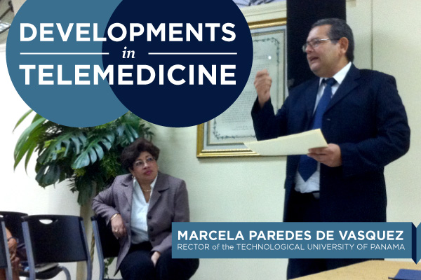
- 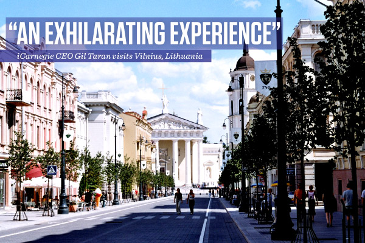
- 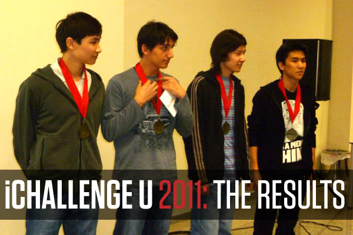
- 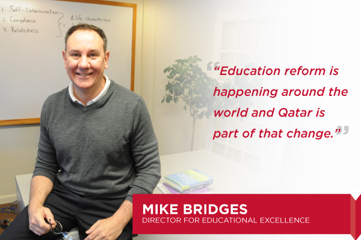
- 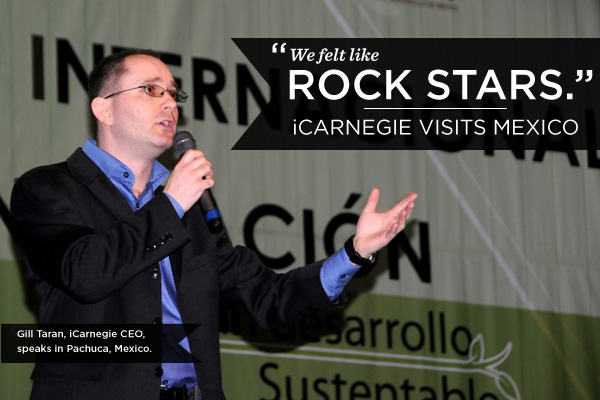
- 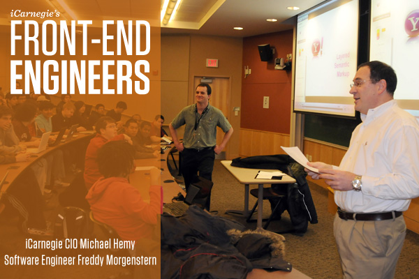
- 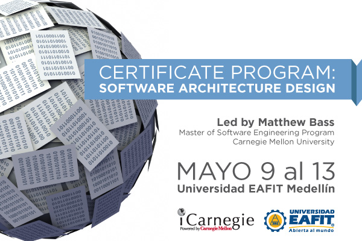
- 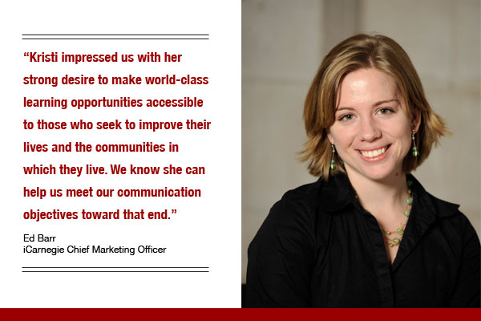
- 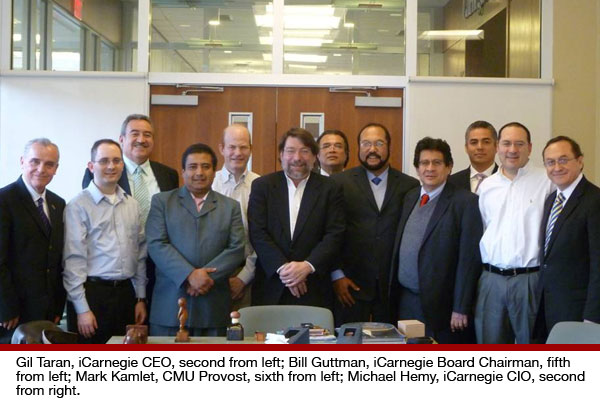
- 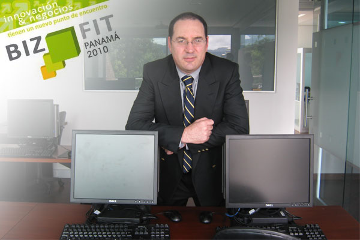
- 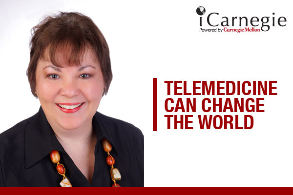
- 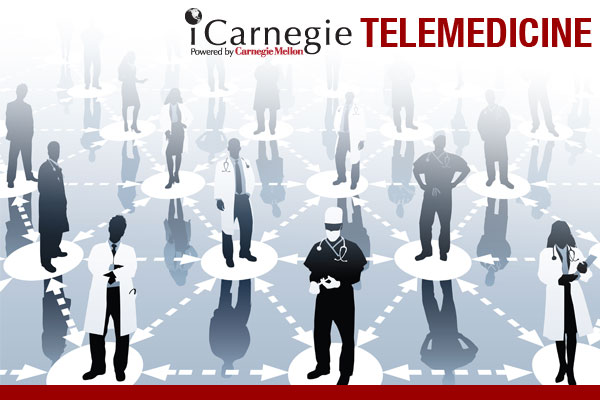
- 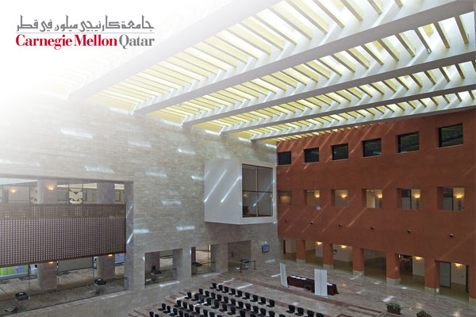
- 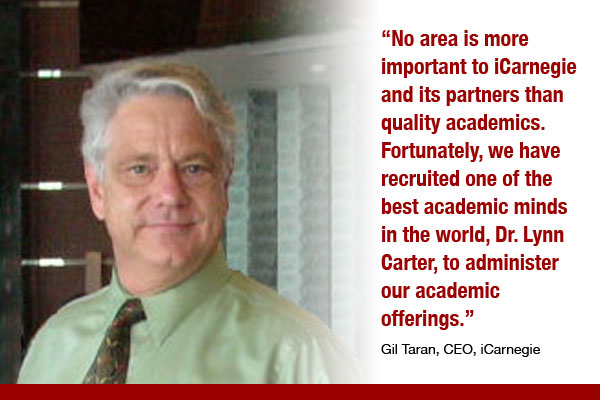
-
Managing Customer Expectations in Panama
How do you manage customers’ expectations? How do you respond to angry customers? How do you use negotiations to get what you want and satisfy your customers? How do expectations differ from one country to the next?
These, and many other important questions, were posed to a group of 20 Panamanian businesspeople who participated in an iCarnegie course in “Managing Customer Expectations” on April 8 and 9, 2011, at the Finisterre Suites in Panama City, Panama. Sponsored by INCAE Business School and taught by iCarnegie’s Chief Executive Officer Gil Taran, and Ed Barr, Chief Marketing Officer, the two-day session featured lectures as well as intense case study and role play as the participants resolved real world issues.
INCAE is a leading provider of executive education in Latin America. Since 1964, participants from all over the world—representing over 20 nationalities and various types of companies and industries—have attended INCAE’s top-quality programs in management, marketing, operations, finance, human development, leadership, technology and several other disciplines.
INCAE Business School has an applied approach that combines best practices and global frontier of knowledge with reality and the environment. This approach aligns well with iCarnegie’s learning-by-doing ideology; it is no surprise, then, that the two organizations have collaborated on numerous occasions.
“We have worked with INCAE before,” said Taran. “They have a world-renowned reputation and understand the needs of businesspeople in Latin America. This experience was no different. We had a challenging group of students, all of whom were obviously experienced and bright professionals. They were eager to learn, and became especially engaged in our negotiation role plays. Their responses in this mock profesional setting impressed us; In demonstrating how they manage expectations, they challenged our own.”
-
iCarnegie Focuses on Lithuania's IT Industry
iCarnegie CEO Gil Taran speaks to Vilnius' next generation of knowledge workers
On Friday, April 1, iCarnegie CEO Gil Taran traveled to Lithuania to meet with educators, government officials and business leaders. This marked the company’s first visit to the country, where iCarnegie aims to establish partnerships in a variety of sectors, providing programs in the areas of executive education, workforce development, and robotics for schoolchildren, among others.
During the visit, Taran was invited to lecture on the art and science of managing technical people to information technology students at the nation’s oldest university, Vilnius University, which was established in 1571. He also spoke to members of INFOBALT, the Latvian Association of IT companies, about strategically aligning their IT market’s needs with education that would support their goals, and minimize their hiring challenges. He discussed the process of assisting government, businesses and the educational system in first defining an educational strategy, then developing and implementing an educational plan that aligns with their objectives.
The city—and the aspirations of its people—left a lasting impression on Taran.
“Visiting Vilnius was an exhilarating experience! It’s the hub of a country that is reconstructing itself, focusing on the enhancement of information communication technology as its primary competitive advantage,” he said. “With the right strategy, Lithuania could become a major economic player in the Baltic region.”
Taran also was excited about the instrumental role iCarnegie could play in the country’s future. “Through iCarnegie’s Global Learning Projects, we have already targeted similar challenges in other countries, and their successful outcomes suggest that we could create a lot of positive change here. A joint collaboration with Lithuania’s government and its business community would be invaluable to everyone involved—especially to its next generation of knowledge workers.”
-
iChallengeU 2011: THE RESULTS
In Astana, Kazakhstan, a crowd of several hundred students filled a large hall at Nazarbayev University eagerly awaiting the results of iChallengeU 2011, iCarnegie’s ultimate online puzzle.
7pm on Friday, April 1 marked the beginning of a weekend, but those in attendance were held in suspense. Kristi Ries, Director of Marketing Communication, had traveled from iCarnegie’s headquarters in Pittsburgh to lead a presentation about NU’s School of Science and Technology—which the company will open in August 2011—and to announce the results of the competition.
Designed by legendary German game developer David Münnich, iChallengeU 2011 tested the logic skills and scientific knowledge of nearly 200 college students on 37 teams. The puzzle began when the game launched on March 22.
With 22 increasingly difficult levels, the stakes were very high. In order to ‘hack’ some levels, students had to print out pages, search through lengthy source code for clues or visually analyze a .wav file. Riddles ranged from science-related topics such as DNA translation to technology puzzles involving hints embedded in image files. The clock was ticking, and participation in the game kept on growing.
Meanwhile, iCarnegie’s web-based RealTime Game Tracking allowed all teams – and viewers all over the globe – to witness teams’ progress live. iCarnegie credits this awesome online tool to the efforts of talented IT staff members Freddy Morgenstern and Amit Boob, led by CIO Michael Hemy.
Before stating the winning teams, Ries teased the crowd, asking students if they REALLY wanted to know the results. The resounding “YES!” echoed off the walls. The hall buzzed with energy.
Cheers accompanied the announcement of 3rd place I-TEAM, who gathered in front of the audience to be photographed and receive custom-designed certificates. Team members include Nursultan Yeltinov, Kuanysh Khabibullin, Iglik Alzhanov and Yerkanat Ramazanov. I-TEAM cited its members’ collective video game experience as a main factor in helping them to solve tough web-related riddles.
Team 3NS secured the 2nd place spot in the competition. The audience roared as Abduokhapov Nauryzbek, Atymtayev Sultan, Bazhirov Nurzhan and Imanberdyiev Nursultan joined Ries for photos and 2nd place certificates.
The winning team, Ad Astra, leveraged their individual talents to solve all 22 levels in just four days (and we’re not entirely convinced that they slept during this time). Team members laughed when reminded of an ‘unexpected’ answer in one of the later levels – a riddle that kept many teams out of the coveted 1st place spot.
Team members Almaskhan Baimyshev, Sultan Duisenbay, Abylaikhan Tileukulov, Elshan Piriyev, Yerzhan Omarbekov all received 1st place certificates, custom-designed medals that read “iChallengeU Champion,” and sleek silver iPod Shuffles.
All teams are featured on iCarnegie’s Facebook page here: http://on.fb.me/hJOlZB.
iCarnegie congratulates all winners of iChallengeU 2011!
-
Dr. Bridges Visits Qatar
How can a country improve it's education?
This was the topic of discussion at the 1st Annual Conference on Education Reform in Doha, Qatar on March 26, 2011. Hosted by Qatar University, the conference focused on identifying ways to improve the quality of education from K through 12 and at the higher education level across Qatar.
iCarnegie’s Mike Bridges, Director for Educational Excellence, served on a panel discussion at the conference that focused on how ICT (information and communication technology) can help teachers to be more effective in the classroom and improve the learning outcomes of their students.
“We spoke about how to use technologies to create and support better educational environments,” Mike said. “It was extremely valuable as a first step and was a good message to the international audience which included teachers, principals, administrators and government officials from the Gulf region.
The conference heard a keynote address from Mona Mourshed of McKinsey & Company, “How the World’s Most Improved School Systems Keep Getting Better,” a study of 20 systems around the world.
“It was a very thought-provoking presentation,” Mike said, “a seminal work that will influence education reform over the next decade.”
The conference hosted over 300 people, many of who attended the panel on ICT. Mike was joined on the panel by Mary Sinclair of Cognition and Dan Meyer of Atomic Learning. The panel was moderated by Damian Riviez, Director of Educate Leaning Center of Educate Qatar.
-
iCarnegie Visits Mexico
iCarnegie CEO Gil Taran speaks to Vilnius' next generation of knowledge workers
“We felt like rock stars!” – Gil Taran, CEO, iCarnegie
On March 2-3, 2011 Gil Taran and Ed Barr spoke before 2000 students at an auditorium in Pachuca, Mexico, at the 8º Congreso Internacional de Administración 2011- Hacia un Desarrollo Sustentable que la Universidad Tecnológica del Valle del Mezquital. They used the words above to describe the experience.
“Those young people heard our message and loved it,” Gil Taran said. “We told them that they can take their place among the greatest countries in the world by using education as their tool, especially technical education. We told them to ‘Change Mexico Now!’”
Surprising Gil and Ed, the audience chanted, “We love you!” and over 100 young people lined up after the presentation to have pictures taken with Gil and Ed.
“I don’t believe I’ve ever felt so welcomed by an audience,” Gil said. “It was phenomenal.”
iCarnegie was invited to speak at the conference by M. en C. Leodan Portes Vargas, Rector of Universidad Tecnológica del Valle del Mezquital.
“Leodan was incredible,” Gil said. “He showed us the great generosity and hospitality of Mexico. He made it effortless for us to travel to Mexico and make our presentations. We owe him much gratitude.”
Gil and Ed were also assisted by guide, Colleen Perez, a native American and long-time resident of Pachca, as well as translators, Javier Rodriquez and Eric Alamilla.
“Our love for, and understanding of, Mexico were made deeper by this experience,” Gil said. “For those who have a negative image of this beautiful country, we say, ‘It isn’t true.’ We felt safe and welcomed for the entire visit.
-
Two iCarnegie Staff Pilot Yahoo! Course
iCarnegie CIO, Michael Hemy and Software Engineer Freddy Morgenstern, are piloting the Yahoo! created course, “Front End Engineering” to a class of 70 students at Carnegie Mellon University.
According to Michael, Yahoo! created a six month program in Front End Engineering out of necessity.
“They needed this kind of talent and couldn’t find it available in the workforce, so they did it themselves. Then, they saw an opportunity to offer their instruction around the world and partnered with us at iCarnegie to do just that.”
Before introducing the Front End Engineering course to the world, however, iCarnegie thought it wise to understand the course thoroughly, so it partnered with CMU’s Computer Science department to offer the class to interested students.
“The interest has been incredible,” said Freddy Morgenstern who has been co-teaching the class with Michael, his boss. “We have a full auditorium in Baker Hall and we have a full wait list. The students include information systems, computer science, and even arts majors.”
Key principles being taught by Michael and Freddy include HTML, CSS and JavaScript. They had an assist from senior Yahoo! JavaScript architect and well-known Java man, Douglas Crockford, who lectured at the first class.
“We have started with the basic,” Michael said. “This includes the principles semantic markup and layered architecture. We’re trying to help them understand that before they try to put cool stuff on a web page, they need to understand the best practices and the fundamentals.”
Michael, as CIO of iCarnegie has an exceptional background to teach the course. Michael oversees the development and use of technology and its applications to learning and knowledge around the world. He has been part of consulting projects to governments and corporations in India, Mexico, Colombia, Israel and a host of other countries. He has presented on IT topics to audiences in countries such as Panama, Mexico and Israel. A successful entrepreneur and business owner, having served as President of CompuWiz Inc. and Cineflo, Hemy was a research scientist at Carnegie Mellon University where he supervised the development of networked applications in various fields such as medical imaging, chemical process optimization and video streaming.
Freddy Morgenstern, a 2009 CMU graduate and 2007 graduate of Universidad Metropolitana, Caracas, Venezuela, has worked with Michael for the past two years at iCarnegie, specializing in designing and developing software applications and tailoring our software lifecycle processes to constantly improve the quality of our software products.
-
Software Architecture Design in Colombia
Matt Bass, a Faculty Member at Carnegie Mellon University's Master of Software Engineering Program, will lead a certificate program on Software Architecture Design to be held at EAFIT University in Medellin, Colombia, on May 3-19, 2011.
Offered by iCarnegie and AseSoftware, the Software Architecture Design certificate program is intended for practicing software architects, aspiring software architects, software developers, software engineers, programmers, and project managers.
The course teaches participants how to use a structured approach to create a system that supports business goals, focusing on systemic properties such as scalability, reliability, security, and modifiability often overlooked by traditional approaches.
"This course benefits both the individual attendee as well as the organizations that they work for. From an individual perspective, the curriculum provides both the skills and credentials needed to be recognized as a Software Architecture Professional. From an organizational perspective, it provides a means for understanding how technical tradeoffs impact the business goals." Bass said.
"This is something that organizations typically have a hard time doing; these tradeoffs are often made without explicitly considering the business impact until it is too late, resulting in systems that are brittle, unstable, lack desired properties such as performance or throughput, and are difficult to evolve or maintain."
Specific topics addressed in the course include:
How to identify architectural drivers from a business context
How to approach projects for eliciting a prioritized set of architectural drivers that reflect the business context
How to specify architectural drivers in a way that is unambiguous and testable
How to select appropriate architectural tactics and patterns
How to employ a structured design process for realizing an architecture
How to create a framework for planning architectural activities<
How to evaluate architecture
How to document software architectures
How to identify software product lines
-
Meet Our Director of Marketing Communication
Kristi Ries to Join iCarnegie as Director of Marketing Communication
Kristi Ries will join iCarnegie in February as its Director of Marketing Communication. In this role, Ries will help lead the company's strategic brand management efforts through the development of high quality publications, marketing materials and advertisements and will expand the company's web presence via effective storytelling and social media campaigns.
"We intend to create a global community for iCarnegie and its many constituencies—including partners, prospective students, educators, and the media—through measurable, memorable communications," said Chief Marketing Officer Ed Barr. "Kristi brings to iCarnegie significant experience from Carnegie Mellon University's School of Music and other higher education marketing and public relations positions. She impressed us with her strong desire to make world-class learning opportunities accessible to those who seek to improve their lives and the communities in which they live. We know she can help us meet our communication objectives toward that end."
-
Mexican Provosts Visit iCarnegie and CMU
iCarnegie CEO Gil Taran speaks to Vilnius' next generation of knowledge workers
The word on iCarnegie is spreading from Mumbai to Mexico. Recently, 11 provosts from a large network of universities in more than 50 campuses across Mexico visited Pittsburgh to explore a partnership with iCarnegie.
The network is supported by the Mexican federal government Ministry of Education, and the delegation was headed by Director General, Mr. Hector Arreola Soria.?? During the visit the provosts were most interested in computing and software development/engineering, robotics, entertainment technology and K-12 STEM education. To that end, the provosts visited the Entertainment Technology Center, Robotics and the National Robotics Center and the CMU School of Computer Science. They discussed their intention to pursue funding opportunities from their government to be able to establish up to 10 iCarnegie centers in Mexico that would allow them to provide curriculum, expertise, projects, trainings and so forth on computing and software development/engineering, robotics, entertainment technology and K-12 STEM education.
The provosts capped their visit with a meeting with CMU Provost Mark Kamlet.?? While the nature of the specific collaboration is still to be determined, our Mexican guests left with a positive view of iCarnegie, CMU, and the potential for collaboration on a variety of possibilities from pre-academic through undergraduate and graduate level programs.
The group from Mexico included: Lic. Francisco Wilson Robles Presidente Reeduca; Ing. Héctor Arreola Soria, Rector; Ing. Ricardo Bello Bolio, Rector; M. en B. Roberto David Vázquez, Rector; Dr. Alejandro Pacheco Gomez, Rector; Ing. Braulio Guadalupe Vázquez Martínez, Rector; Dr. Jesús Maria Contreras Esparza, Rector; M. en C. Leodan Portes Vargas, Rector; Dr. Alejandro Saracho Luna, Rector; Lic. Israel López Centeno, Secretario de Vinculación; Lic. Rosa Aurora López Palacios, Directora de Carrera TIC
-
CTO Speaks at International IT Convention
In late August, iCarnegie CTO, Michael Hemy, was invited to speak at BIZ FIT PANAMA 2010, held in Panama City, Panama. Hemy spoke about the seven key differences in perspective between business and IT and proposed concrete ideas to make IT work for organizations. The perspectives he discussed included: Service, Control, Planning, Budget, Deliverables, Support and Usability.
Hemy helped attendees consider the questions: Why is the relationship between business managers and IT managers so difficult, frustrating to both sides and creating business problems for the organization? Why are most IT projects delivered late, over budget and often used very little within the organization once implemented? Why is it that IT is not seen any more as a competitive advantage (or if it is, is not treated as one by management or used to help make a difference in how organizations operate)? His talk helped business managers answer those questions and understand why they need to work across their organization with the IT managers to ensure that the IT function sustains the organization’s strategies and objectives.
BIZ FIT PANAMA 2010, the International Meeting Place of Business and Innovation, hosted world-renowned international speakers, conducted business meetings and allowed participants to take part in innovation contests.
Keynote speaker, Professor Anil K. Gupta, discussed globalization and strategy. Prof. Gupta is co-author of the international bestseller “Getting India and China Right.” The book addresses forward-thinking the role that India and China can play in creating positive change in Central America.
BIZ FIT PANAMA 2010 also featured a specialized trade fair focusing on technology, with the participation of the most important companies in the information and communication industries from Panama and the region.
-
Dr. Arletty Pinel Talks Telemedicine
iCarnegie Leader Sees Telemedicine Offering a New Way to Healthcare
Telemedicine can change the world if, and only if, large numbers of trained human resources are available to use, plan for and manage the sophisticated technologies that accompany it. No one knows this better than iCarnegie’s Dr. Arletty Pinel, an innovative and dynamic woman with thirty years of internationally recognized experience in designing, implementing, managing and evaluating public health and social development programs around the world.
Dr. Pinel has navigated all aspects of global public health, from direct service delivery at the community level to complex national policymaking, to international policy and management of large multilateral programs. She has supported governments, NGOs and private sector in most regions of the world.
Her areas of expertise include comprehensive public health programming and designing innovative trans-disciplinary and cross-regional capacity development systems enabled by information communications technology (ICT). Dr. Pinel has received multiple international awards in recognition for her outstanding ability to find creative solutions for implementation challenges.
Dr. Pinel started her career in Brazil providing direct patient care, developing public health programs and teaching at various levels. During the 1980s, she coordinated the national HIV prevention program as Chief of Health Promotion at the Brazilian Ministry of Health/National AIDS Control Program in Brasilia. Since then, Dr. Pinel has had leadership positions at major global organizations, such as the United Nations Population Fund in New York City where she was Chief, Reproductive Health Branch and Maternal Health Senior Advisor.
Dr. Pinel has left a trail of accomplishments all over the world in her pursuit to deliver quality healthcare to the poorest and most vulnerable populations. Avid for innovative solutions to address global health problems, she has participated in multiple international start-ups, amongst them The Global Fund to Fight AIDS, Tuberculosis and Malaria in Geneva where she was the first Fund Portfolio Director for Latin America, the Caribbean and Eastern Europe; The International HIV/AIDS Alliance in London where she became the first Regional Coordinator for Latin America; and the YouthNet project in Washington, DC where she served as Deputy Director.
Dr. Pinel, a Panamanian national, received her B.S. in Biology and Zoology from the George Washington University (USA) and her M.D. degree followed by a psychiatry residency at the University of Sao Paulo (Brazil). In addition, she did her post-doctorate work in human sexuality and psycho-endocrinology at Cornell and Columbia Universities (USA).
-
Training Programs in Telemedicine
iCarnegie Will Create Training Programs in Telemedicine
Throughout history, mankind has always been looking for ways to communicate remotely about disease. Smoke signals were used to communicate threats across tribes or to warn about the bubonic plague across Europe. The advent of technology brought about the telegraph, radio, telephone and television—the foundation of modern Telemedicine.
While telecommunication technology allows medical information to be exchanged electronically from one location to another, at the core of Telemedicine is the pursuit of timely solutions that can improve people’s health and well-being. Whether in the U.S., Europe or in remote parts of the world where access to health services is limited, Telemedicine is an essential tool for healthcare globally, one that can many times make a difference between life or death.
Medical practitioners can store-and-forward images and medical data, or consult and engage over remote medical procedures or examinations through interactive audiovisual media, or use satellite technology to conduct real-time consultations between medical specialists in different parts of the world.
New mobile technologies are increasing the geographic reach of services and are redefining the prevailing medical model by empowering end users to take action over their own health. A simple mobile phone in the poorest regions in Africa can be used for health promotion, to monitor vital signs, gather real-time epidemiological data or activate an emergency response system.
The world's visionary healthcare leaders view Telemedicine as an opportunity to overcome obstacles to access to care and treatment, especially in resource-poor settings and low-income countries. iCarnegie sees Telemedicine in the same way, as long as sufficient numbers of caregivers are provided with quality training in the application of Telemedicine technologies.
"Much of the technology being used employs sophisticated software and hardware," says iCarnegie CEO Gil Taran. "We are told by experts in the field, particularly by our own Dr. Arletty Pinel, that many initiatives are ineffective because there are not enough people in remote locations that have the required technology training for using it effectively, maintaining it or helping enhance it."
iCarnegie aims to do something about that. It recently employed Dr. Pinel to lead an effort at customizing technical education for delivery at scale around the world.
Following its tradition, iCarnegie seeks to develop an academically sound but practical approach to training in Telemedicine and medical informatics tailored to the specific needs and contexts of countries.
-
CEO Visits Carnegie Mellon in Qatar
iCarnegie CEO Visits Carnegie Mellon Campus in Qatar
iCanegie CEO, Gil Taran, recently visited Doha, Qatar, and the Carnegie Mellon campus there. As part of the visit, Taran met with a number of educatonal organizations from Qatar and other countries around the Gulf to explore possibilities for collaboration. The visit was hosted by Educate Qatar, one of the leading providers of educational solutions in Qatar and an iCarnegie partner.
During the visit, Taran met with Dr. Judith Hansen, the Dean of the newly-formed Community College Qatar, and with the Acting Chief Executive and Chairman of Al-Tanmiya, a large educational holding company based out of Kuwait.
"Qatar and other countries around the Middle East are particularly exciting," Taran said, "as they are heavily investing in the lives of the people in the region through education. The educational infrastructure in these countries is being expanded and developed with the help of high quality educational programs and collaborations from countries such as Australia, the United States and others."
-
Meet CAO Lynn Carter
Meet iCarnegie's Chief Academic Officer, Dr. Lynn Carter
“No area is more important to iCarnegie and its partners than quality academics. Fortunately, we have recruited one of the best academic minds in the world, Dr. Lynn Carter, to administer our academic offerings.” Gil Taran, CEO, iCarnegie
Lynn Robert Carter has been an accomplished educator most of his working life. He taught at Carnegie Mellon University for more than nineteen years, following seventeen years of industrial software engineering work. Dr. Carter spent twelve years at the Software Engineering Institute (SEI) where his work included onsite software technology adoption support to numerous military and commercial customers. After leaving the SEI, he established and supported the development and deployment of professional Software Engineering Masters programs at CMU West in Silicon Valley (California) and with partners at the SSN School of Advanced Software Engineering, Chennai, India and the MSIT Program sponsored by the State of Andhra Pradesh in partnership with the International Institute for Information Technology and Jawaharlal Nehru Technological University, both in Hyderabad, India.
Recently Dr. Carter helped to establish undergraduate software engineering programs at the CMU campus in Qatar. Lynn certainly knows software education. He has been active with computer science and software engineering accreditation for over eleven years and currently serves as an ABET Computing Accreditation Commissioner having served as an editor of 37 accreditation reports.
“We are, indeed fortunate to have a person of Lynn’s quality overseeing our academic affairs,” Taran said. “Not only does he have an earned doctorate from a prestigious university and significant international experience, he is also a man of great integrity.”